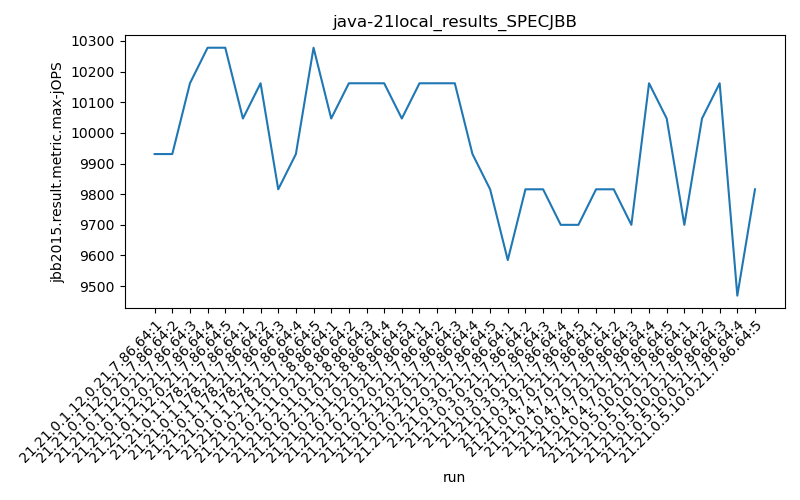
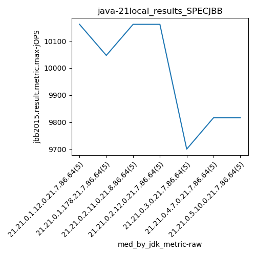
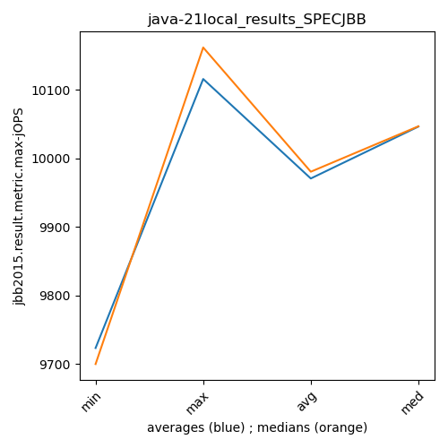
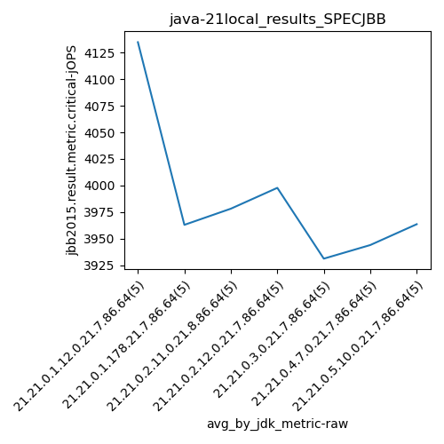
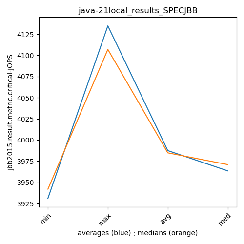

java-21 SPECJBB
Context at bottom
/home/jvanek/git/benchmarks-in-nested-virtualisation-toolchain/final_results/local_results/local_results_J2DBENCH
java-21
SPECJBB
/home/jvanek/git/benchmarks-in-nested-virtualisation-toolchain/final_results/local_results/local_results_SPECJBB
java-21
SPECJBB
local_results_SPECJBB
- local_results_SPECJBB - max-jops
- local_results_SPECJBB - critical jops
local_results_SPECJBB - max-jops
Expected number of java-21 JDKs: 7
1st avgmed_alljdks_metric:
/home/jvanek/git/benchmarks-in-nested-virtualisation-toolchain/final_results/result_processing.py /home/jvanek/git/benchmarks-in-nested-virtualisation-toolchain/final_results/local_results/local_results_SPECJBB jbb2015.result.metric.max-jOPS False
values: [9931, 9931, 10162, 10278, 10278, 10047, 10162, 9816, 9931, 10278, 10047, 10162, 10162, 10162, 10047, 10162, 10162, 10162, 9931, 9816, 9585, 9816, 9816, 9700, 9700, 9816, 9816, 9700, 10162, 10047, 9700, 10047, 10162, 9469, 9816]

Expected number of iterations: 5
final number of values: 35 out of 35
Pass rate: 100.0%
values: (9469, 10278, 9970.828571428572, 10047)

** accuracy from all jdks and runs
more is better
MIN: 9469
MAX: 10278
AVG: 9970.828571428572
MED: 10047
Relative differences 1:
MIN-MAX: 8.0 %
MIN-AVG: 5.0 %
MIN-MED: 6.0 %
MAX-MIN: -9.0 %
MAX-AVG: -3.0 %
MAX-MED: -2.0 %
AVG-MED: 1.0 %
stored to java-21.properties. sort | uniq that!
2nd avgmed_by_jdk_metric:
values: [10116.0, 10046.8, 10116.0, 10046.6, 9723.4, 9908.2, 9838.8]

values: [10162, 10047, 10162, 10162, 9700, 9816, 9816]

values: (9723.4, 10116.0, 9970.828571428572, 10046.6)
values: (9700, 10162, 9980.714285714286, 10047)

** accuracy from all jdks where runs were avged
more is better
MIN: 9723.4
MAX: 10116.0
AVG: 9970.828571428572
MED: 10046.6
Relative differences 1:
MIN-MAX: 4.0 %
MIN-AVG: 2.0 %
MIN-MED: 3.0 %
MAX-MIN: -4.0 %
MAX-AVG: -1.0 %
MAX-MED: -1.0 %
AVG-MED: 1.0 %
stored to java-21.properties. sort | uniq that!
** accuracy from all jdks where runs were medianed
more is better
MIN: 9700
MAX: 10162
AVG: 9980.714285714286
MED: 10047
Relative differences 1:
MIN-MAX: 5.0 %
MIN-AVG: 3.0 %
MIN-MED: 3.0 %
MAX-MIN: -5.0 %
MAX-AVG: -2.0 %
MAX-MED: -1.0 %
AVG-MED: 1.0 %
stored to java-21.properties. sort | uniq that!
local_results_SPECJBB - critical jops
Expected number of java-21 JDKs: 7
1st avgmed_alljdks_metric:
/home/jvanek/git/benchmarks-in-nested-virtualisation-toolchain/final_results/result_processing.py /home/jvanek/git/benchmarks-in-nested-virtualisation-toolchain/final_results/local_results/local_results_SPECJBB jbb2015.result.metric.critical-jOPS False
values: [4098, 4086, 4107, 4132, 4251, 4047, 3946, 3924, 3909, 3989, 3990, 4099, 4003, 3840, 3959, 3987, 4098, 4040, 3931, 3933, 3979, 3942, 3878, 3953, 3904, 3980, 3918, 3904, 3967, 3951, 3948, 3971, 4030, 3979, 3890]

Expected number of iterations: 5
final number of values: 35 out of 35
Pass rate: 100.0%
values: (3840, 4251, 3987.5142857142855, 3971)

** accuracy from all jdks and runs
more is better
MIN: 3840
MAX: 4251
AVG: 3987.5142857142855
MED: 3971
Relative differences 1:
MIN-MAX: 10.0 %
MIN-AVG: 4.0 %
MIN-MED: 3.0 %
MAX-MIN: -11.0 %
MAX-AVG: -7.0 %
MAX-MED: -7.0 %
AVG-MED: -0.0 %
stored to java-21.properties. sort | uniq that!
2nd avgmed_by_jdk_metric:
values: [4134.8, 3963.0, 3978.2, 3997.8, 3931.2, 3944.0, 3963.6]

values: [4107, 3946, 3990, 3987, 3942, 3951, 3971]

values: (3931.2, 4134.8, 3987.5142857142855, 3963.6)
values: (3942, 4107, 3984.8571428571427, 3971)

** accuracy from all jdks where runs were avged
more is better
MIN: 3931.2
MAX: 4134.8
AVG: 3987.5142857142855
MED: 3963.6
Relative differences 1:
MIN-MAX: 5.0 %
MIN-AVG: 1.0 %
MIN-MED: 1.0 %
MAX-MIN: -5.0 %
MAX-AVG: -4.0 %
MAX-MED: -4.0 %
AVG-MED: -1.0 %
stored to java-21.properties. sort | uniq that!
** accuracy from all jdks where runs were medianed
more is better
MIN: 3942
MAX: 4107
AVG: 3984.8571428571427
MED: 3971
Relative differences 1:
MIN-MAX: 4.0 %
MIN-AVG: 1.0 %
MIN-MED: 1.0 %
MAX-MIN: -4.0 %
MAX-AVG: -3.0 %
MAX-MED: -3.0 %
AVG-MED: -0.0 %
stored to java-21.properties. sort | uniq that!
/home/jvanek/git/benchmarks-in-nested-virtualisation-toolchain/final_results/local_results/local_results_RADARGUNs1
java-21
SPECJBB
/home/jvanek/git/benchmarks-in-nested-virtualisation-toolchain/final_results/local_results/local_results_RADARGUNs3
java-21
SPECJBB
/home/jvanek/git/benchmarks-in-nested-virtualisation-toolchain/final_results/local_results/local_results_JMH
java-21
SPECJBB
/home/jvanek/git/benchmarks-in-nested-virtualisation-toolchain/final_results/local_results/local_results_DACAPO
java-21
SPECJBB
pass rates:
local_results_SPECJBB=100.0%
Context:
- local_results
- SPECJBB